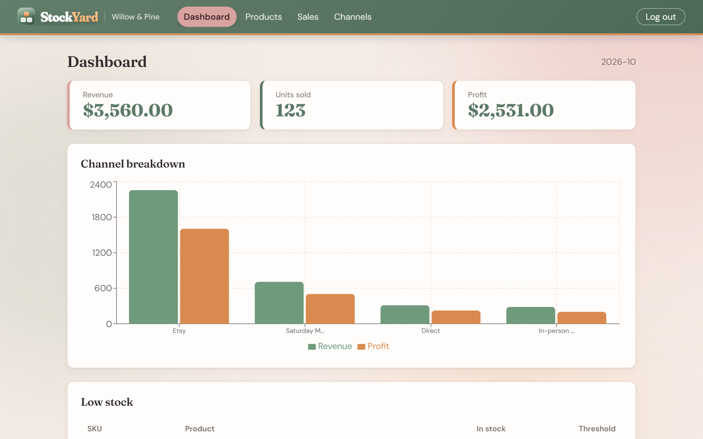
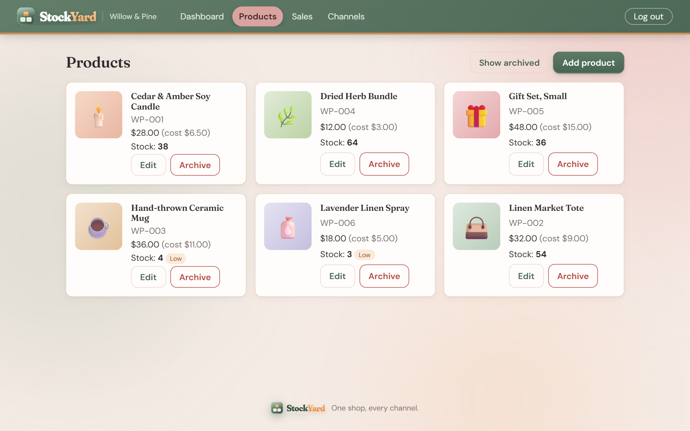
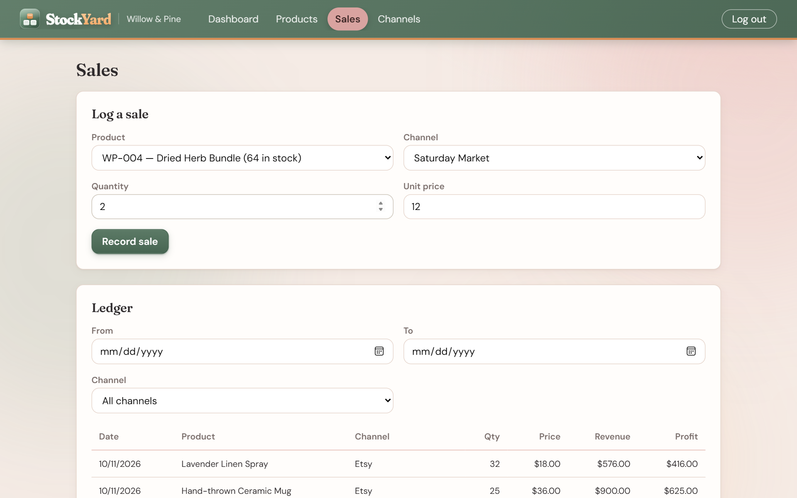
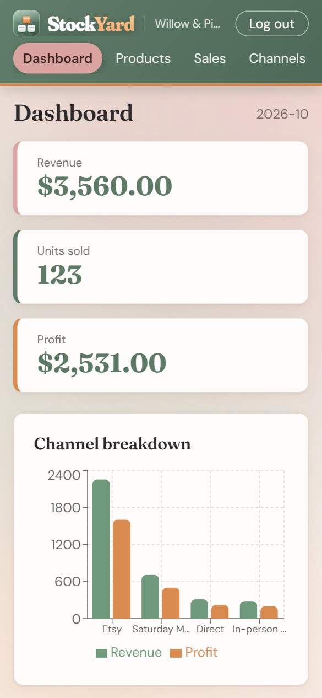

StockYard
Inventory and sales, made for makers who outgrew spreadsheets.
Nicholas Moppert
A self-running presentation · about 8 minutes · sound on
The problem
Spreadsheets break. Enterprise tools overcharge.
Solo makers selling on Etsy, at markets, and from their own sites hit a wall once inventory grows.
1
Counts drift Sell a mug at a craft fair and Etsy still shows it in stock. Someone has to fix it by hand.
2
Profit is a guess Revenue is easy to see. What each channel actually earns after cost of goods is not.
$50
Per month, for features they'll never touch The usual escape from the spreadsheet is a heavy platform built for businesses ten times the size.
The solution
One place for stock, sales, and the numbers
Every capability from the proposal's MVP shipped.
Product catalog SKU, photo, cost, price, stock Edit any time Archive without losing history Sales ledger Log product, channel, quantity, price Stock drops automatically Filter by date and channel Your own channels Etsy, markets, direct, pop-ups Rename or add anytime Starter set on sign-up Dashboard Month revenue, units, profit Channel breakdown chart Low-stock restock list Private by design Secure sign-up and login Stays signed in on reload Shops can't see each other Works anywhere Phone, tablet, desktop Breakpoints at 480, 768, 1024
Product tour
StockYard in action
stockyard-ucr9.onrender.com




1
The month at a glance Revenue, units and profit for the month, which channel earns the most, and what needs restocking.
2
A catalog that stays honest Photo, cost, price and stock for every product. Low stock is flagged, and old products are archived, never deleted.
3
Sales in seconds Pick a product and a channel, and stock drops automatically. The ledger filters by date and channel.
4
Pocket-sized, too The same app on a phone: nothing spills off the screen, tables wrap, and the chart stays readable.
Architecture
Layered, simple to run
A React single-page app talks JSON over HTTP to a layered Spring Boot API backed by PostgreSQL.
React 18 + Vite React Router, Axios interceptors, Recharts, CSS Modules
⇄
Controllers REST + validation
→
Services Business rules, transactions
→
Repositories Spring Data JPA
→
PostgreSQL 16 Flyway-versioned schema
Java 21 Spring Boot 3.5 Spring Security + JWT
DTO records OpenAPI docs Docker Compose GitHub Actions CI
Code walkthrough · one request, end to end
Logging a sale
SaleController.java → SaleService.java (trimmed)
@PostMapping public SaleResponse record(@AuthenticationPrincipal MakerPrincipal me, @Valid @RequestBody SaleRequest req) { return service.record(me.id(), req); } @Transactional public SaleResponse record(Long makerId, SaleRequest req) { Product product = products.findByIdAndMakerId (req.productId(), makerId) .orElseThrow(() -> ApiException.notFound("Product" )); // channels are looked up the same way if (products.decrementStock (product.getId(), makerId, qty) == 0) { throw ApiException.conflict("Not enough stock for " + sku); } Sale sale = new Sale(maker, product, channel, qty, price); // the Sale constructor copies today's unit cost return SaleResponse.of(sales.save(sale)); }
1
The controller stays thin Spring Security hands it the signed-in maker, and @Valid rejects bad input before any business logic runs. Everything else is delegated.
2
Ownership on every lookup Products and channels are fetched by id and maker. Someone else's product simply doesn't exist for you: a 404, never a data leak.
3
One guarded statement decides The database lowers stock only if enough remains. Zero rows updated means the sale is refused with a 409. No read-then-write race.
4
Ledger in the same transaction The sale copies the unit cost at that moment, then saves. @Transactional makes stock and ledger commit together, or not at all.
Code walkthrough · security
Stateless JWT authentication
SecurityConfig · JwtAuthFilter · JwtService (trimmed)
.sessionManagement(s -> s.sessionCreationPolicy(STATELESS )) .addFilterBefore(jwtFilter, UsernamePasswordAuthenticationFilter.class ) .authorizeHttpRequests(a -> a .requestMatchers("/api/auth/register" , "/api/auth/login" ).permitAll() .requestMatchers("/api/**" ).authenticated () .anyRequest().permitAll()) // JwtAuthFilter String header = request.getHeader(HttpHeaders.AUTHORIZATION); if (header != null && header.startsWith("Bearer " )) { jwt.parse (header.substring(7)).ifPresent(principal -> SecurityContextHolder.getContext().setAuthentication(auth)); } // JwtService Jwts.builder().subject(String.valueOf(makerId)) .claim("email" , email) .expiration(Date.from(now.plus(ttl))) .signWith (key).compact();
1
No server sessions Nothing is remembered on the server between requests. Each request carries its own proof of identity, so the API scales and restarts cleanly.
2
A filter checks every call It reads the Bearer token, verifies the signature and expiry, and puts the signed-in maker into the security context.
3
Locked by default Only sign-up and login are open. Every other /api route requires a valid token; everything else is just the React app.
4
Signed, expiring tokens Tokens carry the maker id and an expiry, signed with a secret from the environment. Passwords are stored only as BCrypt hashes.
Code walkthrough · database
A schema that protects itself
V1__init.sql · Flyway migration (excerpt)
CREATE TABLE sales ( id BIGINT GENERATED BY DEFAULT AS IDENTITY PRIMARY KEY , maker_id BIGINT NOT NULL REFERENCES makers(id) ON DELETE CASCADE , product_id BIGINT NOT NULL REFERENCES products(id), channel_id BIGINT NOT NULL REFERENCES channels(id), quantity INTEGER NOT NULL CHECK (quantity > 0), unit_price NUMERIC(12,2) NOT NULL CHECK (unit_price >= 0), unit_cost NUMERIC(12,2) NOT NULL CHECK (unit_cost >= 0), sold_at TIMESTAMP WITH TIME ZONE NOT NULL ... ); CREATE INDEX idx_sales_maker_date ON sales(maker_id, sold_at); -- products table stock INTEGER NOT NULL CHECK (stock >= 0), CONSTRAINT uq_products_maker_sku UNIQUE (maker_id, sku)
1
Normalized and linked Each sale points to its maker, product and channel with foreign keys. No duplicated names, no orphan rows.
2
Rules live in the database No negative stock or prices, quantity above zero, one SKU per maker. Even a bug in the app can't write bad data.
3
Cost is snapshotted Each sale stores the cost at the time. Edit a product's cost later and last month's profit stays correct.
4
Indexed for the questions we ask Maker plus date range is exactly how the dashboard and ledger filter. Flyway applies this same schema in every environment.
Code walkthrough · front end
From API to a responsive chart
Dashboard.jsx · Dashboard.module.css · tokens.css
useEffect (() => { api.get('/api/dashboard' ).then((r) => setData(r.data)) .catch((e) => setError(describeError(e).message)); }, []); const chartData = data.channels.map((c) => ({ name: c.channelName, Revenue: Number(c.revenue), Profit: Number(c.revenue) - Number(c.cost), })); <ResponsiveContainer width="100%" height="100%" > <BarChart data={chartData}> <Bar dataKey="Revenue" fill="#6f9a7c" /> <Bar dataKey="Profit" fill="#d98a4e" /> .chart { height: 240px; } @media (min-width: 480px) { .chart { height: 280px; } }@media (min-width: 768px) { .chart { height: 320px; } }/* tokens.css */ --color-sage: #5c7a66; --color-orange: #d98a4e;
1
One shared API client The page just calls the API. An Axios interceptor already attached the token and handles expired sessions in one place.
2
Shape data for the chart The server sends totals; the page derives profit per channel and hands Recharts a simple list.
3
Charts that resize The chart fills a container whose height changes by breakpoint, so it never clips on a phone.
4
Tokens, not a UI library CSS Modules over shared design tokens. The whole green-and-orange re-theme was a handful of variables.
Code walkthrough · proof
Tests that try to break it
SalesFlowTest.java (simplified)
// 10 in stock. Sell 8. send(post("/api/sales" ), token, sale(productId, channelId, 8 ), 201 ); // Only 2 left. Selling 3 must fail. send(post("/api/sales" ), token, sale(productId, channelId, 3 ), 409 ); assertThat(product.get("stock" ).asInt()).isEqualTo(2 ); assertThat(send(get("/api/sales" ), token, null , 200)).hasSize(1 ); assertThat(dash.get("revenue" )).isEqualByComparingTo("144.00" ); assertThat(dash.get("profit" )).isEqualByComparingTo("112.00" ); // Another shop tries to sell this product send(post("/api/sales" ), otherMaker, sale(productId, theirChannel, 1), 404 ); Tests run: 3, Failures: 0, Errors: 0 · BUILD SUCCESS
1
A normal sale works Ten units in stock, eight sold: the request succeeds with a 201.
2
Overselling is refused Asking for three when two remain returns a 409 Conflict.
3
And nothing changed Stock is still two and the ledger still has one entry. A failed sale leaves no trace.
4
The math is right 8 sold at $18 is $144 revenue; with a $4 cost, $112 profit. The dashboard matches to the cent.
5
Shops stay separate A second maker can't sell the first maker's product: 404. Isolation is tested, not assumed.
Quality and delivery
Containerized, automated, one command to run
Anyone can run it docker compose up --build Open localhost:8080 Postgres included Ready to host Single Docker image Render blueprint in the repo Secrets from environment Automated checks Backend tests with Maven Front-end production build GitHub Actions on every push
Reflection
What changed, and what I learned
Proposal What I shipped Why Azure App Service + Static Web Apps One Docker image, Render blueprint Anyone can run or view it without cloud credentials Caching layer for reads Aggregates computed in PostgreSQL Fast enough at this scale; less to maintain Azure Blob image storage Local disk behind a storage class Simple now; one class to swap later
Lesson: push consistency into the database, ship the simplest architecture that works, and keep the docs honest about what's real.
StockYard
Know what you have. Know what you sold. Know where it sold.
Next up: restock alerts · CSV import · public catalog page · tags
StockYard
stockyard-ucr9.onrender.com